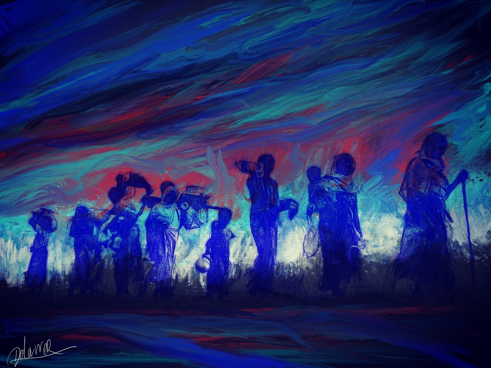
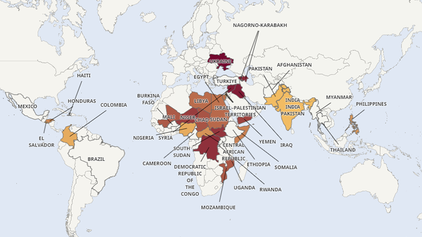
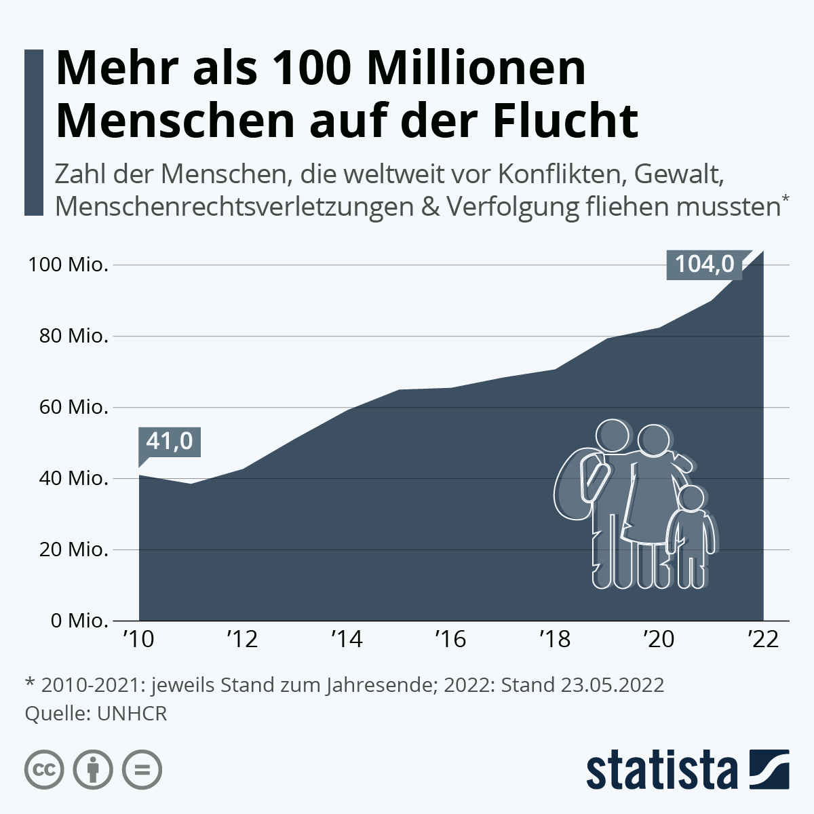

Unser Ziel

Bewaffnete Konflikte, Flucht und Vertreibung können signifikante Folgen für die Psyche von Menschen haben. Unsere Initiative möchte Licht ins Dunkle bringen und über die Verzahnung von Gewalt und Auswirkungen auf den seelischen Frieden aufklären. Wir gehen auf die politischen Hintergründe von Konflikten ein und machen auf das kollektive und individuelle Leid von Betroffenen aufmerksam.
Die Problematik von Flucht, Krieg und (psychischen) Traumata ist äußerst vielschichtig und betrifft sowohl individuelle als auch gesellschaftliche Ebenen. Einige der Hauptpunkte seien hier zur Verdeutlichung näher erläutert:
Menschen, die kriegerische Auseinandersetzungen und Gewalt erlebt haben, können unter schweren psychologischen Problemen wie Posttraumatischer Belastungsstörung (PTBS), Depressionen oder Angstzuständen leiden. Diese Zustände können ihr tägliches Leben stark beeinträchtigen und ihre Fähigkeit zur Bewältigung von Herausforderungen einschränken [1]. Insbesondere die Familie als soziales und kulturelles Gefüge kann durch Gewalthandlungen erhebliche Schäden annehmen und sogar durch Krieg und Flucht zerbrechen. Familien werden getrennt, Gemeinschaften werden zerrissen, und die soziale Unterstützung, die Menschen normalerweise haben, wird oft unterbrochen oder komplett in Mitleidenschaft gezogen [2].

Die Zahl der bewaffneten Konflikte auf der Welt hat in den letzten Jahren zugenommen, und damit auch die Anzahl an Betroffenen durch die kriegerischen Auseinandersetzungen. Gleichzeitig stieg auch die Dauer der Konflikte an, sodass Kriege eine chronische Belastung für Betroffene darstellen [3]. Hinzu kommen Belastungen, die militärische Konflikte mit sich bringen, wie Lebensmittelknappheit, mangelnde Gesundheitsversorgung und fragile Infrastruktur – Faktoren, die für sich genommen auch auf die psychische Verfassung wirken [4] [5].
„Sirenen heulen, Panzer überrollen Autos, Raketen explodieren, zerfetzen Wohnhäuser, Kirchen, Kliniken. Verletzte Kinder sterben vor den Augen ihrer Eltern. Menschen verbringen Nächte voller Angst in Kellern oder kauern bewaffnet auf kalten Straßen im Häuserkampf“
So schrieben die Autorinnen Corinna Schöps und Claudia Wüstenhagen in einem Artikel in der Zeit [6]. Eine Aneinanderreihung schrecklicher Ereignisse – wie übersteht eine Menschenseele dieses Erlebte? Was machen diese Erfahrungen mit einem Individuum?

Kriegerische Auseinandersetzungen, Konflikte, Flucht und Vertreibung sind unausweichlich mit der psychischen Verarbeitung eines Menschen verknüpft und gehören näher erforscht. Über die Auswirkungen eben jener genannten Punkte auf das seelische Wohlbefinden – das wiederum seinerseits das tägliche Zusammenleben beeinflusst – aufzuklären, kann dazu führen, Vorurteile abzubauen und Empathie für Menschen aufzubringen. Nur so kann ein gesellschaftliches Zusammenleben harmonisch ermöglicht werden. Hinter jedem Konflikt stecken letztendlich Menschen, die ihrerseits Erfahrungen machen mussten, die vielleicht keine Menschenseele hätte machen sollen.
Als studentische Initiative: Krieg Trauma Psyche möchten wir Stigmata abbauen, die Konnektivität von Krieg und Psyche näher betrachten und die Geschichten eben jener erzählen, die sonst nicht gehört werden.
Quellenangaben
- [1] Hoppen, T. H. and Morina, N. (2019). The prevalence of PTSD and major depression in the global population of adult war survivors: a meta-analytically informed estimate in absolute numbers. European Journal of Psychotraumatology, 10(1), p. 1578637. doi: 10.1080/20008198.2019.1578637.
- [2] Farhood L, Zurayk H, Chaya M, Saadeh F, Meshefedjian G, Sidani T. The impact of war on the physical and mental health of the family: the Lebanese experience. Soc Sci Med. 1993 Jun;36(12):1555–67. doi: 10.1016/0277-9536(93)90344-4. PMID: 8327919.
- [3] tagesschau.de (o. J.). Kriege, Krisen und Konflikte: Die Welt im Dauerstress. Online: tagesschau.de/wissen/krieg-frieden-leibniz-institut-konfliktforschung-ukraine-100.html [Zugriff: 25.04.2024].
- [4] Moreno-Chaparro J, Piñeros-Ortiz S, Rodríguez-Ramírez L, Urrego-Mendoza Z, Garzón-Orjuela N, Eslava-Schmalbach J. Mental health consequences of armed conflicts in adults: an overview. Actas Esp Psiquiatr. 2022 Mar;50(2):68–91. PMID: 35312994; PMCID: PMC10803861.
- [5] Jain N, Prasad S, Czárth ZC, Chodnekar SY, Mohan S, Savchenko E, Panag DS, Tanasov A, Betka MM, Platos E, Świątek D, Krygowska AM, Rozani S, Srivastava M, Evangelou K, Gristina KL, Bordeniuc A, Akbari AR, Jain S, Kostiks A, Reinis A. War Psychiatry: Identifying and Managing the Neuropsychiatric Consequences of Armed Conflicts. J Prim Care Community Health. 2022;13:21501319221106625. doi: 10.1177/21501319221106625. PMID: 35726205; PMCID: PMC9218442.
- [6] Schöps, C. und Wüstenhagen, C. (2022). Krieg und Psyche: Wie übersteht die Psyche einen Krieg? Die Zeit, 05.03.2022. Online: zeit.de/gesundheit/2022-03/krieg-psyche-traumatisierung-ptbs-unterstuetzung [Zugriff: 25.04.2024].